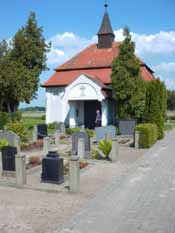

|
|
|
Kirche von Schinne
Denkmal für die Gefallenen
Pfarrhaus - Gemälde
Ortseingang Schinne  Friedhof Schinne
|
Der Ort Schinne liegt an der Speckgrabenniederung, einem ausgedehnten Wiesengelände, das früher ein Seebecken gewesen sein soll. Der Name "Speckgraben" soll nach dem alten Adelsgeschlecht, den "Herren von Speck", benannt worden sein. W. Zahn schreibt, dass der Ort bereits 1158 erwähnt wurde. Riedel dagegen gibt in seinen Urkunden das Jahr 1181 an. Geschrieben wurde der Name des Ortes damals "scinne" und ist deutscher Herkunft. Er stammt vermutlich vom althochdeutschem "sein" mittelhochdeutsch "schkn" (Schein), von dem Eigennamen "scirfus" ab und könnte also Siedlung eines Glanzvollen bedeuten. Der Ort wurde als Straßendorf angelegt und soll zu ältesten germanischen Siedlungen in der Altmark gehören. 2 km westlich von Schinne lag ein altes Kirchdorf namens "Klinkow", das aber bereits im 15. Jahrhundert wüst geworden war. Das Rittergut in Schinne war über viele Jahrhunderte hindurch im Besitz der Familie derer von Borstel. Laut Kirchenbucheintragung starb der letzte der Familie derer von Borstel 1804. 1829 wurde das Rittergut von den Borstelschen Erben an den Amtmann Voigt verkauft. Danach folgten zahlreiche Besitzer. Das Mitte des 18. Jahrhunderts erbaute Herrenhaus wurde nach dem II. Weltkrieg abgerissen. 1890 erhielt Schinne eine Chaussee, einen Abzweig der Straße von Stendal nach Bismark und 1921 eine Kleinbahnverbindung nach stendal und Bismark, die aber bereits 1961 wieder eingestellt wurde. Heute leben über 500 Einwohner in diesem gepflegten Dorf. DIE DORFKIRCHE:: Auf dem alten Friedhof, umgeben von einer Feldsteinmauer, steht die Feldsteinkirche aus der Mitte des 12. Jahrhunderts. Ihr Grundriss ist vierteilig bestehend aus Westquerturm, Schiff, eingezogenem Chor und halbrunder Apsis. Das Westportal mit abgetrepptem Rundbogengewände aus Granit und das alte rundbogige Ostfenster der Apsis mit sauberen Granitgewände sind in ursprünglichem Zustand. Alle üpbrigen Öffnungen sind zugemauert (z.B. Südtür im Schiff) oder verändert (um 1730) worden. Nachträglich ausgeführt wurde auch der Anbau einer Bahrenkammer an der Südseite und darüber ein von außen zugänglicher Herrschaftsstuhl mit vier Rundbogenfenstern. das Chordach ist über diesen Anbau hinübergeschleppt. Die Ausstattung der Kirche ist aus verschiedenen Jahrhunderten. Der Kanzuelaltar aus der Zeit um 1730, Empore, Gestühl, Orgel aus dem 19, Jahrhundert und die Glocken von 1441 und von 1598. Ausgemalt wurde die Kirche letzmalig 1965. Eine Friedhofskapelle inmitten des neuen Friedhofes am Dorfeingang entstand im Jahre 1913. Das Zeltdach des Dachreiters der Kapelle wurde 1993 mit Kupferbleck eingedeckt. Kugel und Kreuz wurden ebenfalls erneuert.
|